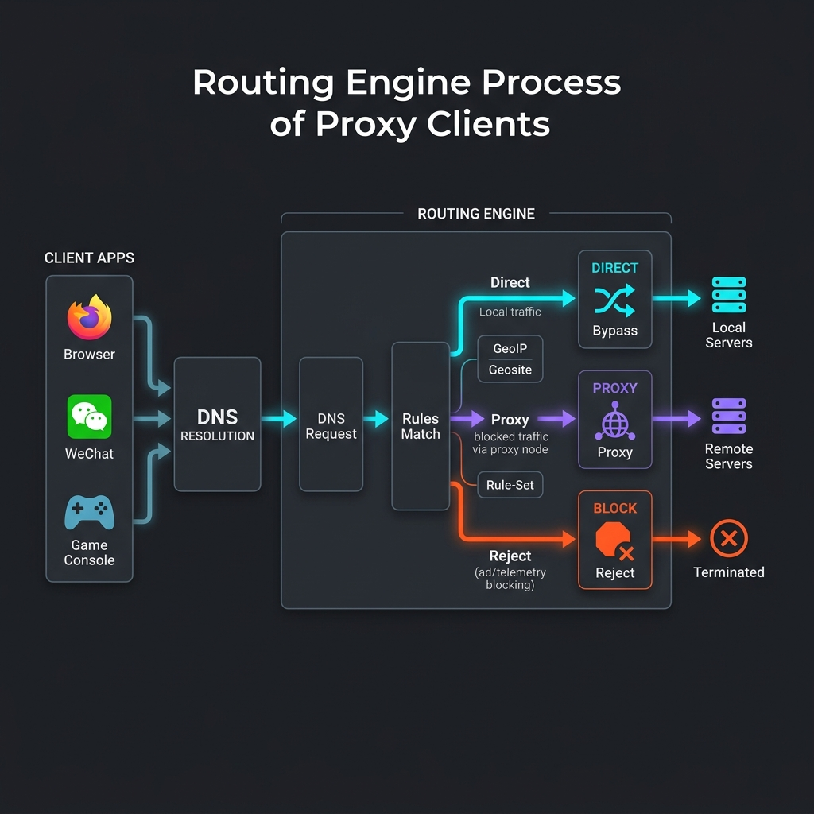

在第一次接触 Clash、Shadowrocket（小火箭）、Sing-box 等现代网络代理工具时，很多新手用户都会被其复杂的面板所震撼。与传统“一键挂梯子”的 VPN 软件不同，这些工具默认不接管你电脑或手机的全部流量，而是通过一套精密的分流规则引擎，决定哪些流量走代理、哪些走直连。
在使用过程中，不少人会遇到类似疑问：“为什么我一开梯子，国内的网银 App 就提示异地异常？”、“为什么连上节点后，淘宝的商品图刷不出来，微信也经常转圈圈？”这些问题 99% 都是由于对客户端的分流机制不理解，选错了路由模式所致。本篇文章将带您彻底拆解客户端分流的底层原理，助您掌握高效上网的最核心技巧。
一、 核心概念：三大基础路由模式
在任何主流科学上网客户端中，你都会在首页面板看到三个核心切换选项：全局模式（Global）、规则模式（Rule）和直连模式（Direct）。它们本质上是代理客户端内核路由表的控制开关：
1. 规则模式 (Rule / Rule-based) —— 推荐的常驻选择
规则模式是智能分流的核心。在这种模式下，客户端会读取你的规则配置文件，针对每个发出的数据包进行匹配。
- 如果是去往 Google、YouTube、Twitter 等被封锁的网站，流量就会被自动打包发往你选择的境外节点；
- 如果是去往百度、腾讯、B站或是国内各大银行等本土网站，数据包将直接通过你本地的家庭宽带发送出去（不走代理服务器）；
- 如果是遇到国内恶劣的广告弹窗或跟踪追踪域名，流量甚至可以直接被丢弃拦截（Reject），起到净化网络环境的作用。
2. 全局模式 (Global / Proxy) —— 仅用于测试的排错模式
在全局模式下，客户端的路由引擎将完全失效，所有发出站的外部流量（除了局域网内设备流量外），都会无脑发往你选中的那一个代理节点。
强烈警告： 许多新手以为上网就必须开全局，这在实际体验中是一场灾难。使用全局模式会导致你的国内应用（如微信、淘宝、抖音）访问体验极差（因为流量去海外绕了一圈又回来），甚至会导致你的网银、国内游戏因为 IP 异地变动而被封号防盗限制。
3. 直连模式 (Direct) —— 本地物理宽带测试模式
在直连模式下，客户端接管流量，但会将所有连接直接放行至公网，完全绕过任何代理节点。它通常用于排查本地宽带物理连通性，或是临时排查是否是因为机场节点全线挂掉导致无法访问国内网站。

二、 分流规则引擎是如何匹配流量的
一个普通的数据请求（例如，你的浏览器请求访问 www.netflix.com/title/12345）在客户端内，会经历如下审计流程：
- 流量拦截： 本地网络配置（如 Windows 的系统代理，或是 iOS 的 VPN 网卡驱动）将访问请求的流量重定向送至客户端监听端口。
- 域名嗅探： 客户端通过内置的 Sniffer 抓取数据包的应用层域名，识别出该请求试图去往
netflix.com。 - 规则匹配： 从配置文件的规则表第一行开始向下匹配，询问：“当前域名是否符合本行的过滤条件？”。
- 执行出口： 一旦命中（例如命中
DOMAIN-SUFFIX,netflix.com,Proxy），流量将被交由“Proxy（代理分组）”并完成加密上传；如果所有规则都没对上，流量会滑落到最后的兜底行MATCH,Direct或者是FINAL,Proxy。
三、 规则匹配的先后优先顺序
为了保证分流的正确性，规则配置文件在排列规则时，必须遵循“从精确到模糊，从上到下匹配”的原则。常见的规则格式和优先层级如下：
- 精确域名匹配 (DOMAIN)： 优先级最高。如
DOMAIN,images.google.com,Proxy。只对这一特定的二级域名的访问起作用。 - 域名后缀匹配 (DOMAIN-SUFFIX)： 覆盖范围较广。如
DOMAIN-SUFFIX,google.com,Proxy。这会让所有以google.com结尾的域名（包括其旗下的几百个子域名）均执行代理。 - 域名关键词匹配 (DOMAIN-KEYWORD)： 模糊识别。如
DOMAIN-KEYWORD,amazon,Proxy。只要域名里面包含amazon字符（如 amazonaws.com），就走代理。 - IP网段匹配 (IP-CIDR)： 直接针对目的服务器的 IP 进行阻断或直连。如
IP-CIDR,192.168.1.0/24,DIRECT，确保局域网网络流量不走代理。 - 国家定位匹配 (GEOIP)： 根据目的 IP 的地理位置进行归类。例如规则
GEOIP,CN,DIRECT。当目的 IP 经数据库查询属于中国大陆时，无条件执行直连。 - 兜底匹配 (MATCH / FINAL)： 必须放在配置文件的最底部。如
FINAL,Proxy。用来防止未被规则收录的境外冷门网站被漏掉。
四、 DNS 解析在分流中扮演的致命角色
分流规则之所以能够平稳运行，完全依赖于正确的 DNS（域名系统）解析。
很多情况下，为了匹配 GEOIP,CN 规则，客户端必须先获取到该域名的真实 IP。这时，如果客户端首先向国内的 DNS 服务器（如 119.29.29.29）查询国外被墙域名的 IP，解析出来的 IP 往往是已经被 GFW 污染破坏的假 IP。
由于拿到了假 IP，客户端一方面无法匹配正确的直连或代理逻辑，另一方面即使发起了连接也无法正常访问。这就是为什么在配置分流时，必须配套配置科学上网特有的 **内置 DNS 服务 (DNS Module)**。通过设置 Fake-IP（虚假IP模式）或是国内国外并发解析机制（例如对大陆域名向国内 DNS 查询，对境外域名强制使用加密的 DoH 服务器查询），来防止 DNS 泄露，这也是保证分流稳定不卡顿的关键。关于防泄露机制可参考本站的 DNS防泄漏自检指南。
五、 如何在客户端定制自定义规则
随着订阅的发展，目前大部分机场在订阅中已经预装了适合绝大多数普通网民的规则集（通常基于 ACL4SSR 或是 Loyalsoldier 的规则）。但如果你有特殊的上网需求（如特定网服、公司私有内网段不能走代理，或是特定的跨境学术站点必须走最高速的节点），你就需要自建自定义规则：
在 Clash Verge Rev 中配置自定义规则 (Merge 扩展)
你可以使用 Clash 的 Merge（合并） 功能，在不破坏原本订阅更新的前提下，强行插入自己的规则：
prepend-rules:
# 强行让自己的公司内部子域名执行直连
- DOMAIN-SUFFIX,mycompany.local,DIRECT
# 让某台特定群晖NAS的外网访问走专线代理
- DOMAIN,nas.myfamily.xyz,香港专线
# 拦截特定的弹窗广告域名
- DOMAIN-SUFFIX,doubleclick.net,REJECT在 Shadowrocket (小火箭) 中配置
点击小火箭下方的“配置”页面，在当前使用的 .conf 配置文件中点击“编辑配置” → “规则” → 点击右上角“+”号添加新规则。类型选择相应的 DOMAIN-SUFFIX，行为选择 DIRECT 或 PROXY，即可实时完成修改，且即使更新订阅，这些本地自定义规则依然会被强行保留在顶部执行。
如果你想系统了解更完善的软件配置指引，推荐阅读我们的 Clash Verge 保姆级配置教程 或是 小火箭基本导入方法。